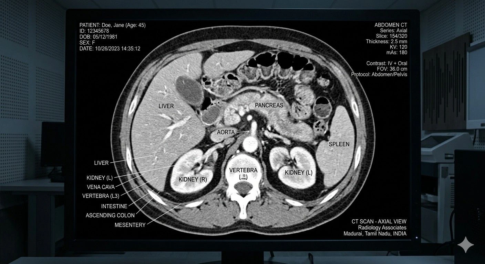
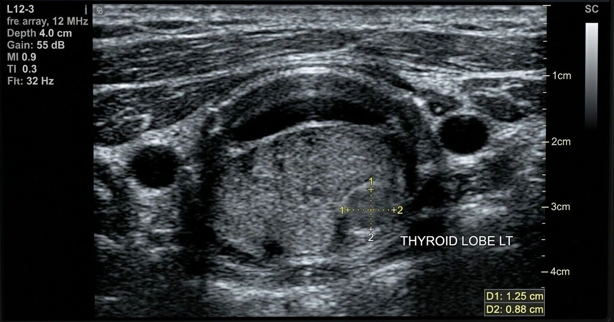
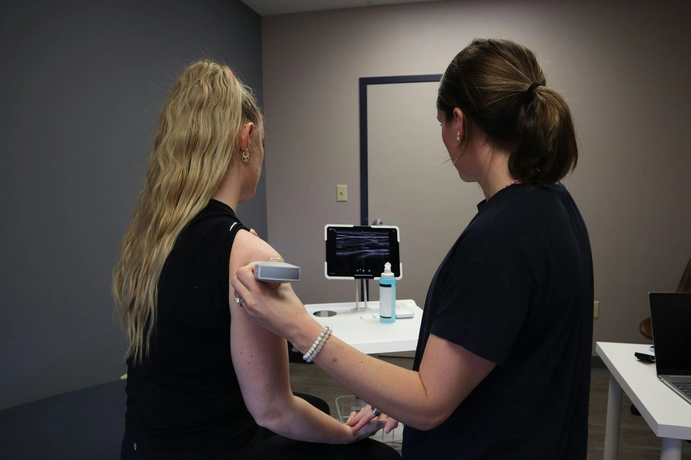

Services
Our services include advanced ultrasound and diagnostic scans designed to support accurate diagnosis, early detection, and comprehensive patient care.

Antenatal Scan
Antenatal scans monitor the baby’s growth, heartbeat, and development throughout pregnancy for healthy maternal care.
Learn MoreWomen's Imaging
Diagnostic ultrasound scans for evaluating women’s reproductive health, breast conditions, and related hormonal abnormalities safely.
Learn More
Whole Abdomen
Ultrasound scan examining abdominal organs to detect infections, stones, swelling, and internal abnormalities safely.
Learn More
USG-Local Parts
Focused ultrasound scan used to evaluate specific body parts, swellings, pain, or soft tissue abnormalities.
Learn MoreAdult ECHO
Heart ultrasound assessing cardiac chambers, valves, structure, and blood flow without using radiation safely.
Learn More
Doppler Study
Advanced ultrasound technique evaluating blood circulation through arteries and veins to detect vascular abnormalities safely.
Learn MoreFetal Interventions
Specialized prenatal procedures performed to monitor or manage fetal conditions during pregnancy safely and effectively.
Learn MoreGeneral Interventions
Ultrasound-guided procedures supporting accurate diagnosis, fluid aspiration, and minimally invasive medical treatments safely.
Learn More